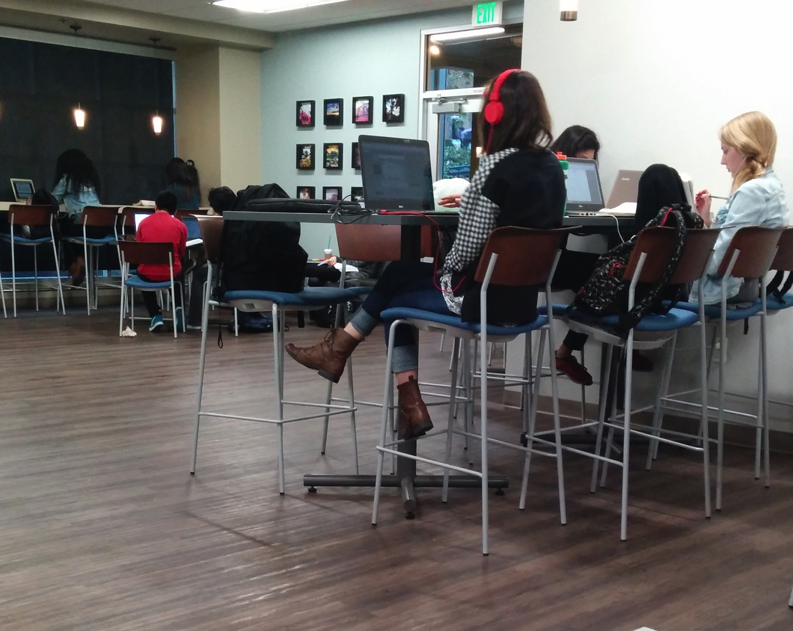
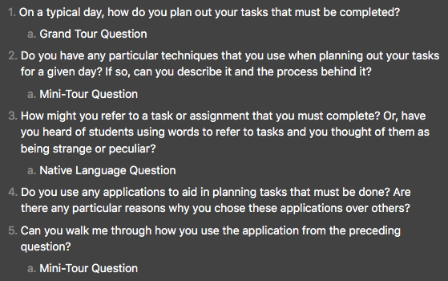
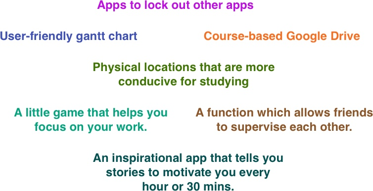
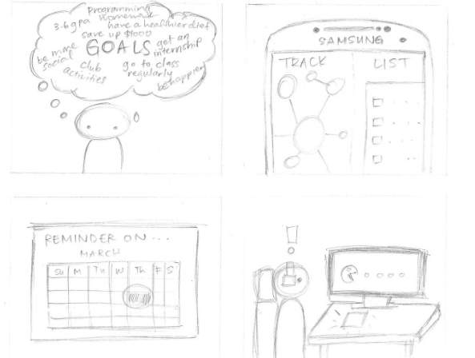
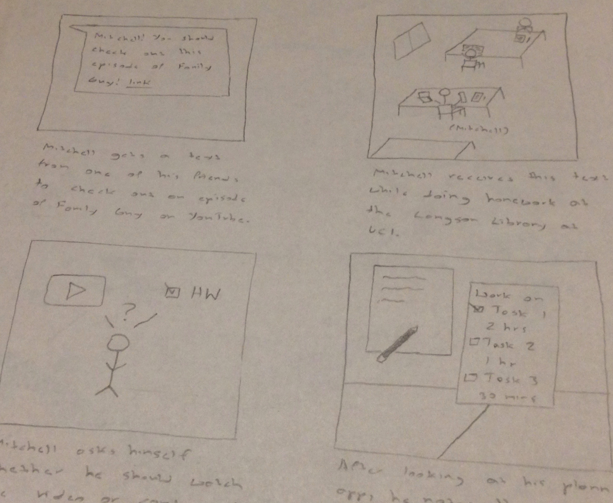

Type
Course Project - UCI - Intro to HCI
(Design Project)
Professor
Lynn Dombrowski
Informatics, Phd
Time frame
Jan 2015 - Mar 2015
(~8 weeks)
Role
UX Designer
Responsibilities
Conducted Observations
Conducted Interviews
Data Analysis
Constructed Personas
Requirements Engineering
Constructed a Storyboard
Constructed Mobile Prototype
User Testing (Think Aloud)
Group Presentation Participation
Team
Joshwin Greene
Diane Monchusap
Yukino Nagasawa
John Thach
Yuan Xie
Design Tools Used
Pencil & Paper
Background
This was a quarter-long user-centered design project that was meant to give us hands-on experience with a multitude of Human Computer Interaction (HCI) Design techniques within a team of five students.
The Challenge
We were challenged to demonstrate our knowledge of user-centered design practices by coming up with a design solution for our chosen topic area. For my group, everyone had chosen Producitivity & Efficiency (getting things done) as their topic area.
Here is the full description of our topic area:
“Main: How could we help people make the most of their time? - Sample topics: How could we help people stay more organized in the workplace? How might we use the power of the crowd to help students stay on top of their classes? How could we help people reduce their procrastination while working or studying? How might we improve collaborating over the internet (i.e., noncollocated work)?”
The Process
Besides picking a topic area and putting a report together at the end, there would be five other project milestones. These milestones were based on a user-centered design process that was introduced by our professor. This process was adapted from a design process that was created at the Stanford dschool:


Disclaimer: The following information is based on the final report and the various documents that were written up for each project milestone. Addtionally, since this page is organized to follow the above user-centered design process, each of the following sections will specify the project milestone(s) that they are covering.
Section Description
This section covers the “Individual User Research” project milestone. We were individually assigned the following tasks:
Conduct observations that totaled at least 40 minutes, at at least two different times or locations. For each observation, we needed to take notes while we were out in the field. At the end of this stage, we would need to summarize our key findings and write up a reflection of the experience.
Conduct at least two interviews, lasting at least 15 minutes each. For each interview, we needed to record it and write a short summary of the interview. At the end of this stage, we would need to write up a reflection of the experience.
Given the option to either create a cultural probe / collage or conduct two additional interviews with an additional reflection ( I chose to conduct two additional interviews. )
Write up an Executive Summary, which would first be used to articulate what we learned from our observations and interviews. Secondly, we would need to articulate some possible design directions that made sense based on our findings.
Observations
To start, I chose to do both of my observations on campus. One was done at a major food court and the other was done at a study area.
Findings
-
The use of cellphones and social networking sites were a common distraction.
-
An object’s state can affect the overall atmosphere in a particular area. For instance, in one of the shown photos, you will see a turned off television. I felt that it served as an important signifier as it told people that the room’s volume level shouldn’t be too loud since it would have a negative effect on one’s productivity. If the television was turned on, I think it would have had a dramatic effect on how that area would be used by students.
-
In the food court, it was apparent that a person using a laptop was completing a task of some sort. Otherwise, they were just eating or taking a break.
Reflection
Our observations could be best described as using the “fly on the wall” technique. I thought that this technique was counter-productive for my observations as it was hard to determine what everyone was doing and whether they were really being productive with their time. If I used a technique that made it known that I was observing them and combined it with doing interviews directly afterward, I believe I may have gotten better data as I would have been able to obtain a better understanding of how productive my participants were being.

Interviews
After the observations, it was then time to put some questions together and start interviewing people. Utimately, I would come up with 12 interview questions and interview four students.
Questions

All Interview Questions
Findings
Tools used to plan everyday tasks
-
Two interviewees exclusively used EEE (Electronic Educational Environment) and each class’ website to create mental notes of what needed to be completed each day
-
The other two interviewees used Google Calendar or the default calendar app on their phone to plan their day
Techniques when planning tasks
-
Focus on one subject each day, i.e. doing the homework for a particular subject and then reviewing the subject’s material later in the day
-
Asking yourself what should be done and then what could be done after completing those tasks
Native language for completing work related to school
-
“get to work”, “stop messing around”, “study up”, “gotta go ham”, “need to study”
Study partners / studying in groups
-
All of my interviewees either liked studying alone or felt that studying in a group never worked out or was counterproductive
-
One interviewee noted that studying with one person who had the same drive as him worked out well
Handling complex tasks
-
Interviewees liked to break complex tasks into more manageable tasks
-
Interviewee liked to work on a task early and get as many questions answered at the very beginning
Ways to guard against procrastination
-
Fear failer
-
Rationalize the act of procrastinating as something that will negatively affect your quality of life
Ways to relieve stress (so it doesn’t have a negative impact on one’s productivity)
-
Play video games / watch tv
-
Create music
-
Rationalize that you can’t do any better; don’t become pessimistic
Asked if gamification would entice them to complete their tasks
-
All of my interviewees said yes
Reflection
When it comes to writing interview questions, it may be a good idea to make your questions more general or have alternate groups of questions that depend on how an interview is going. By doing this, it will guard against having to cut an interview short because of a shortage of applicable questions.
Executive Summary
What I wanted to learn
I wanted to learn how students stay productive each day and if they have any techniques that help them plan out their day, guard against procrastination, and manage stress.
Important Insight
It was surprising that none of the students that I interviewed used a To-Do list application or a traditional planner. In this day in age, with the plethora of apps available, I would have thought that more students would be integrating productivity-minded mobile apps into their daily routines. The general response to traditional planners and planner-like applications was that they were cumbersome and the time to actually record everything wasn’t worth it in the end.
Next Steps
Based on these findings, a study on whether students enjoy using EEE and each class’ website to plan out their day should be done. The focus should be on whether their approach is efficient.
Design Exploration Ideas
-
Develop a web app that allows professors to document and define their assignments in a way that allows students to automatically see all due dates or test dates in a calendar format
-
Develop a standardized method of creating syllabi. The results of which should allow for it to be easily imported into other applications
-
Explore the most efficient way for students to keep track of all of the assignments for their classes, i.e. assignment details and due dates.
Section Description (Beginning of Group Work)
This section covers the “Making Sense of Data” project milestone. Except for an individual component in the last milestone, this and the following milestones would be in a group setting. We were assigned the following tasks:
Create an affinity diagram and one diagram of our choice in order to sort our combined exploratory research findings. For the second diagram, we would need to answer some relevant questions, which will be specified at the end of this section
Write up a problem statement, which would be used to identify the problem that we would tackle for this project
Construct at least two personas/persona stories/modular personas that explained the problem that we wanted to solve from the perspective of two prospective users
Preparation
At our first meeting, we would decide what diagram would be constructed besides the assigned affinity diagram. We decided to construct a thematic diagram based on the amount of diversity that we saw in our data. Three of the five members of our group had pretty similar data when compared to the other two. So, we wanted to use a technique that was focused on finding the common themes between the data that was similar, in addition to the data that was different.
Before constructing each diagram, we had everyone first understand each diagram and then create a document that outlined their findings in a way that would be helpful when we came together to construct both diagrams.
Affinity Diagram
When we created the affinity diagram, we focused on categorizing the data that everyone collected and finding the correct hierarchy that best described our data.

Thematic Diagram
Comparatively, the creation of the thematic diagram wasn’t as straightforward when compared to the process of creating the affinity diagram. When we started to create the thematic diagram, we first tried to use a top-down approach and start with a global theme that was influenced by the problem that we selected, i.e. technology being a distraction. We ended up not going in this direction when we realized that focusing on technology from the start was limiting how we were constructing themes from our data. Once we took a bottom-up approach and brainstormed the common themes in all of our data, we were able to successfully construct the thematic diagram.

Problem Statement
We decided to solve the following problem: individuals being distracted by technology. Based on our data, we felt that this was a problem that many students currently face, and it commonly leads to bad habits, such as procrastination.
Personas
In order to help us paint a better picture of our audience, we created two personas.
Notable Contribution
After the initial personas were created, I noticed that they didn’t match our problem statement, and I brought this issue to everyone’s attention. To help illustrate the points that I was making, Yukino stated the following: “we need to make the personas more about how they are getting distracted by technology and how they can't efficiently get their work done.” My suggestion to solve this problem was that we could have the personas succumb to various sites on the web, like Facebook and YouTube.
I would up end modifying the first persona. I would also create a whole new persona that would replace the second persona after we decided that our problem statement would focus on students instead of being broad.
Finalized Personas (Brief)

The first persona is a college student in the middle of his second year that has a lot on his plate. However, even though he has a great habit of making use of Google Calendar to schedule all of his tasks and so on, he always succumbs to distracting websites like YouTube and StumbleUpon.
The second persona is an older student who is currently studying at a community college after leaving the military. Even though he has found technology to be very helpful in planning his schedule and determining what needs to be done each day, he has found himself wasting time on Facebook and Twitter.
As you can see, both of these individuals are falling victim to the problem that we chose.
Additional Contribution
Drafted up our answers for the second diagram, i.e. why we chose to create the thematic diagram, who participated, and how the creation process differed from affinity diagramming
Section Description
This section covers the “Brainstorming Report” project milestone. We were assigned the following tasks:
Decide on 3-4 key requirements that would motivate our chosen design solutions. At the end of this stage, besides describing each requirement, we would need to explain how we chose these requirements and why they were the most important.
Come up with at least 35 different design solutions. With the help of people who weren’t team members, we also needed to come up with at least 10 additional design solutions.
Decide on three solutions that we would later storyboard and consider in more depth. These solutions needed to be sufficiently different from one another. At the end of this stage, we would need to answer some relevant questions, which will be specified towards the end of this section.
Reflect on the differences between the second and last brainstorming sessions
User Needs / Requirements
At the beginning of this stage, we were directed to have a brainstorming session and come up with at least 20 potential user needs or requirements. So, for our group, we asked ourselves what would our users need / require in order to help them not be distracted by technology.
Since we were in a group of five, I suggested that we each come up with four user needs / requirements and decide on the key requirements during the following day’s discussion section. For reference, since we were using Google Docs to collaborate, we would be able to reference each other’s ideas in order to make sure that our ideas were unique.
After executing this approach and then voting for the top four user needs / requirements, we would end up coming up with the following key requirements (with brief explanations):
-
Staying on Task: This is the most obvious requirement for a productivity-related product. In order to ensure that users are being productive with their time, the product must help users stay on task.
-
Goal-Oriented Focus: The product must help people keep their goals in mind so that they are more likely to be motivated to complete their tasks.
-
Mobile/Cross-platform: The product must be mobile/cross-platform because students are always on the go and they usually use multiple devices, such as phones and laptops, to organize their everyday tasks.
-
System Must be Straightforward and Easy to Use: Students already have a lot of work with school, internships, clubs, and etc. The product shouldn’t create any additional work for the user. It must integrate into their lives in a smooth manner.
Our Rational
As a group, we felt that our main goal was to help students become more efficient in doing their tasks. We felt that it was important to provide motivation for students to do well, so they actually do complete their work. In addition, we felt that the product must be well integrated into their life because students are not going to want to use it if it just adds to their workload.
Possible Design Solutions
After coming up with our key user needs / requirements, we would then be directed to have another brainstorming session in order to brainstorm at least 35 design solutions or innovations.
Like with our first brainstorming session, we split this up so that we each had to come up with at least six ideas. After this, we would then be individually paired with a person that wasn’t a part of our group. With that person, we would brainstorm 10 additional ideas. Ultimately, we would come up with 52 different design solutions.

Finalized Three Unique Solutions
Even though only three members would be in attendance, we had a meeting where we finalized and chose the three design solutions that we would move forward with.
In order to choose our three design alternatives, we first had everyone choose their three favorite design solutions. We made sure that everyone chose solutions that were based on our chosen user needs and requirements. We then discussed why we each chose these as our favorite ideas. We ended up choosing the design solutions that the majority of our group favorited or liked the most.
In the end, we would end up choosing the following three design solutions:
| Design Solution | How the idea addressed our design problem | How the idea satisfied our requirements |
|---|---|---|
| An app that would allow you to visualize your long-term goals and objectives and what you have completed so far in your life in order to motivate you to give your all on what you are doing now. | It reminds the user what they are currently working towards and what they have done so far. When a user gets this reminder, it will motivate them to work towards their goals instead of getting distracted by activities that are a waste of time and push them farther away from their future goals and objectives. | This solution focuses on highlighting the goals and past achievements of the user in order to motivate them to stay on task. Additionally, the app will be designed to be mobile / cross-platform , straightforward, and easy to use. |
| A web/mobile app that locks out apps/websites that users deem as being distracting, such as Facebook and YouTube. | It uses a direct approach when addressing our problem. For example, both of our personas wasted time on distracting websites and mobile apps. This app would put an end to this so that they can focus on their priorities. | This solution focuses on keeping the user focused by blocking distracting websites and apps, which will intrinsically motivate the user to work towards achieving their goals as the user will rationalize that the main reason why they are using this application is to make them more productive with their time. Like the first item, the app will be designed to be mobile / cross-platform, straightforward, and easy to use. |
| A planner app that would automatically break down what you should do every day based on previously given time estimates and due dates. In an academic context, these estimates could be added via the estimates of past students. The end result of these breakdowns would be a daily checklist of tasks that specifies how much time should be allocated for each task. | It gives users more of a reason to be productive with their time. If the user is given a preset list of tasks that helps them guard against procrastinating on particular assignments / tasks, then they will be incentivised to stay focused. | This solution gives off a goal-oriented vibe by identifying each task as a goal that is broken down into tangible objectives for users to complete. Since each of these objectives includes how much time should be spent working on the task, it will motivate the user to stay on task because the earlier the user completes all of their tasks for a given day, the more time they will have to relax, which will be seen as a reward. Like the above items, the app will be designed to be mobile / cross-platform, straightforward, and easy to use. |
Personal Contributions
-
Helped with brainstorming
-
Helped finalize our key requirements and final three design alternatives
-
Wrote the summary that described how we chose our final design solutions, what each solution entailed, how it addressed our chosen problem, and how each solution satisfied our key user needs and requirements
Section Description
This section covers the “Storyboards” project milestone and the prototyping portion of the “Paper Prototypes & Evaluation” project milestone. We were assigned the following tasks:
Construct two storyboards for each proposed design solution. Each storyboard would depict a key use case for the associated design solution.
Pick a final design solution from our three design solution alternatives. We were the given the option to combine some or all three design solutions. We also needed to answer some relevant questions, which will be specified at the end of this section.
Construct a paper or low-fi prototoype for our chosen design solution. We also needed to answer some relevant questions, which will be specified at the end of this section.
Storyboards
So, now that we had three design alternatives, it was time to gain a better understanding of their key use cases, which is why we were instructed to create two storyboards for each one.


After the storyboards were complete, we deliberated on what would ultimately become our final design solution.
Our decision
We decided to combine our planner and blocker app design solutions. Besides combining these two solutions, we also decided that we would add a work period scheduling component that would allow users to specify the periods of time that they would use to work on their tasks each day.
So, the end result of these three components would be a cross-platform solution that does the following:
-
Automatically break down what you should do everyday based on previously given assignment / task specifications, such as time estimates and due dates
-
Generate a daily checklist of tasks, based on the broken up tasks from the previous step, that includes how much time should be allocated for each task
-
The ability to add work periods.
-
The ability to block the user, during their work periods, from visiting mobile apps and websites that the user previously deemed as being distracting.
-
A view that shows their schedule in a Gantt Chart-like format.
Why we chose to combine the planner and blocker design solutions
They complement each other really well, especially when paired with the work period scheduling component. With the planner component, the user will know exactly how much time they should be blocked from distracting media, by the blocker component, since they will know how long they should work on their assignments / tasks each day. With the blocker component, the user will be blocked from visiting distracting media during their chosen work periods. During these work periods, the user will be focused on making progress and completing the tasks that were generated for them via the planner component. These two components work hand-in-hand in helping the user be more productive with their time instead of wasting it on distracting media.
Why we chose this approach over including or going with our solution that visualizes the user’s goals and objectives
We felt a more direct approach would be more efficient. With the goal / objective visualizer, the intention was to motivate the user to give their best effort if they were reminded what they were working towards and what they had accomplished to get to their current point. However, even though this is intrinsically motivating, there isn’t anything stopping users from succumbing to their bad habits. So, since our goal is to help users be more productive with their time, we felt that our chosen solution would make the biggest impact in the long run.
Paper Prototypes
After we had chosen our design solution, which we called Stay on Track, it was time to put some prototypes together. Since one of our chosen requirements was to make it cross-platform, we created paper prototypes for both the mobile and web version of our design solution. In order to not duplicate our work, we decided to have the prototype for the web version showcase what the user would see when the user first starts using the app whereas the mobile version would showcase what the app would look like after being used for some time.
I constructed the prototype for the mobile version whereas Yukino constructed the prototype for the web version. In order to make sure that both versions would be consistent, we made sure to put a basic task flow outline together beforehand.
Here are some photos of the web version:

Here are some photos of the mobile version:


Additional Contributions
-
Constructed one of the storyboards for the planner design solution
-
Wrote the explanation that described our final design solution, how it addressed our chosen design problem, and why we chose it over the others
-
Wrote the summary that described the prototyping tools we chose and why, in addition to a reflection of our experience creating and testing our prototypes(testing happened during the following stage)
Section Description
This section covers the rest of the “Paper Prototypes & Evaluation” project milestone. We were assigned the following tasks:
Have at least two of our team members conduct a self-reflective evaluation of our solution in the form of either a cognitive walkthrough or heuristic evaluation
Recruit at least two participants to participate in a short think-aloud exercise with the prototype(s) that we created
Write a short report detailing our evaluations (summary of the results of the two self-reflective evaluations and the two think-aloud exercises)
Write up a brief report that described the key problems that we identified in our prototypes and what would or would not be changed based on the feedback that we received. We would also need to explain if we would conduct more evaluations before iterating our design or if we thought that we could change our designs with just the first round of feedback.
Write up a reflection of the evaluation process
Prepare a presentation that summarized our chosen design problem, showed our prototype, gave an overview of our evaluation findings, and a summary of our next steps
Game Plan
For reference, this stage commenced when both of the prototypes were in the process of being constructed. Since Yukino and I were working on the prototypes, I suggested that Diane, Adam, and John could complete the evaluations.
I stated that if they wrote up summaries of their findings by midday the next day or that evening, then the brief report and reflection related to the evaluations could be written up. I also stated that Yukino and I would focus on the prototype write-ups and offer our support for the evaluation write-ups. This game plan was approved, with a deadline for the finding summaries set for the following evening.
Diane and Adam would do the self-reflective evaluations and John would conduct the two think aloud exercises after I asked him if he could do it. For the self-reflective evaluations, Diane would end up doing the heuristic evaluation whereas Adam would do the cognitive walkthrough. Diane would take the initative in writing up the evaluation summaries and the related reflection.
Besides helping to delegate these tasks, I would do the following:
-
Help team members understand what needed to be done and how they could approach the tasks that were assigned to them
-
Volunteer and conduct one of the think aloud exercises
-
Review and help with error-correcting for both self-reflective evaluations
-
Reviewed all of the summaries that were written by Diane


User Testing and Evaluation Results
Based on the results of all of our evaluations, we found that our design led to both positive and negative results.
Positive: The evaluators of our prototypes found the workflow to be pretty straightforward.
Negative: The main issues were a lack of documentation and some functionality that wasn’t completely understandable, e.g. the floating action button that is used in Material Design.
Next Steps
If we had more time to work on this project, we would add more documentation and gather more feedback in order to determine what areas should be improved.
Product Summary
Stay on Track is a cross-platform productivity app that helps users be more productive with their time
Features
-
Daily Objectives: Generate daily objectives based on previously given task specifications, such as duration and personal estimates
-
Gantt Chart View: View your task completion schedule in a Gantt Chart-like format
-
Schedule View: Sync with Google Calendar and view your personal schedule
-
Work Period Scheduling: Designate work periods on your schedule in order to specify when you shouldn’t use distracting media
-
Blocker: Block yourself from distracting websites and mobile apps during your work periods and additional periods of time
-
Task Manager: Add and manage the tasks that will be used to generate your daily objectives
Grades
Except for one that received a 90%, all other group
milestone submissions received a perfect score.
Additional Links
© Joshwin Greene 2017